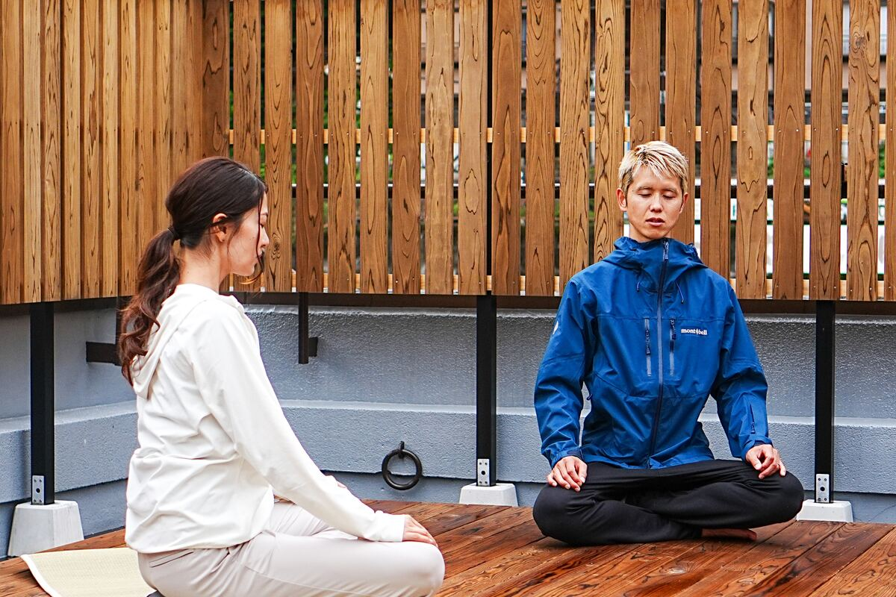
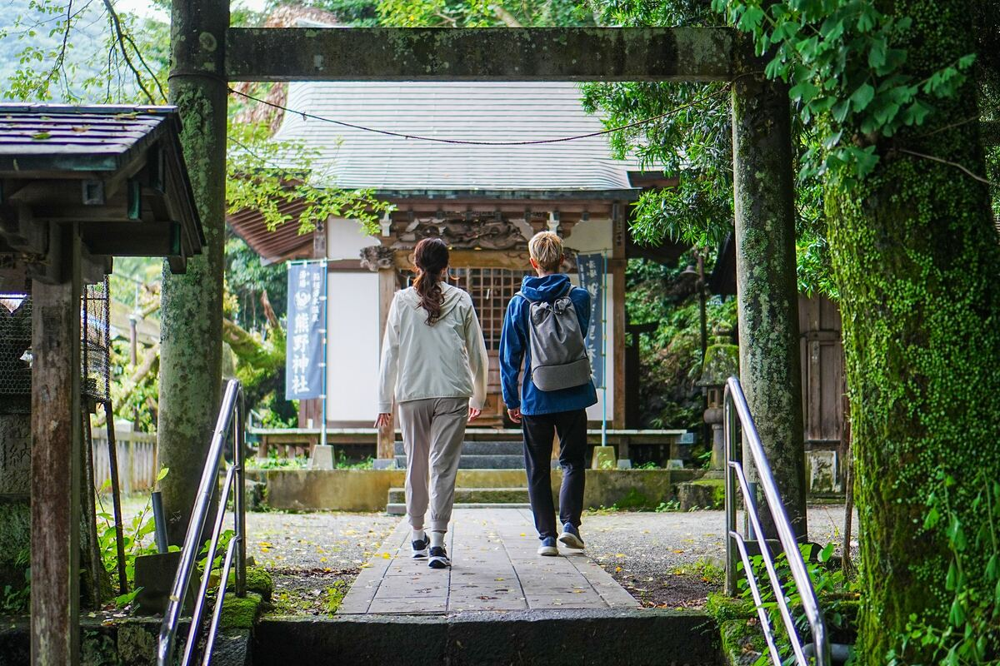
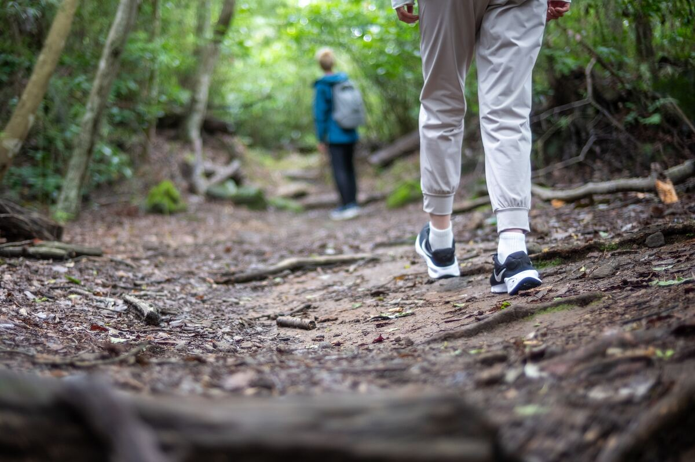

一
Simple Exercise & Meditation
Calm your mind with a few simple exercises, followed by a brief meditation.

箱根 · Hakone Yusaka Trail
A Meditative Zen Walking Experience.
禅 · The Concept
Reset your mind and reconnect with your senses in the forest of Hakone. In our modern world of information overload, our brains are constantly overstimulated. This tour offers an opportunity to quiet the mental noise and reconnect with your physical senses through the practice of Zen Walking on the historic Yusaka Trail — a mountain path tread by travelers and pilgrims for about 1,000 years.
旅の見どころ · Tour Highlights

Calm your mind with a few simple exercises, followed by a brief meditation.

Offer your prayers at Kumano Shrine, the origin of Hakone's hot springs.

Practice Zen Walking, focusing on the sensations in the soles of your feet to calm your mind.

Write down your reflections and feelings from the tour on a traditional 'Ema' wooden plaque, and share them with the group.
旅程 · The Itinerary
Meet up at HAKONE CALLING Rooftop
Program starts — mind-calming exercises & brief meditation
Walk to the trail
Visit Kumano Shrine
Zen Walking on the Yusaka Trail
Zen Walking ends
Check-out & sharing on the rooftop of HAKONE CALLING
Dismissal — end of tour
案内人 · Meet Your Guide

Hi everyone! I'm Kohei, your guide for the Zen Walking Tour in Hakone.
I'm a former engineer and a father of one. In 2026, I followed my passion and became an independent nature guide. Alongside my career, I've spent years providing bodywork treatments focused on somatics and regulating the nervous system.
Drawing on my experience in the human mind-body connection, I am honored to lead you on this special meditative forest walk. Let's quiet our minds, reconnect with ourselves, and find peace deep in the beautiful forests of Hakone together.
My English is still a work in progress, but I promise to guide you with all my heart and passion!
I look forward to sharing this mindful experience with you!
よくある質問 · FAQ
Absolutely! Solo travelers are more than welcome.
Yes, we can securely store your luggage in our locked staff room during the tour.
Yes, don't worry! We will be walking on mountain paths for about an hour at a relaxed, meditative pace. It is suitable for most fitness levels.
To protect against insects (especially in summer), we highly recommend wearing long sleeves and long pants. Any comfortable athletic shoes or sneakers are perfectly fine — hiking boots are not required. Please bring your own drink.
The tour operates in light rain, as walking in a misty forest can be a beautiful, meditative experience. However, if severe weather forces us to cancel, we will notify you by 7:00 PM the evening before. In that case, no cancellation fees will apply.
アクセス · Access & Location
A 3-minute walk from Hakone-Yumoto Station.
Map — Hakone-Yumoto Station area
ご予約 · Tour Details
Grand Opening Offer — until September
Regular price ¥12,500 · per person